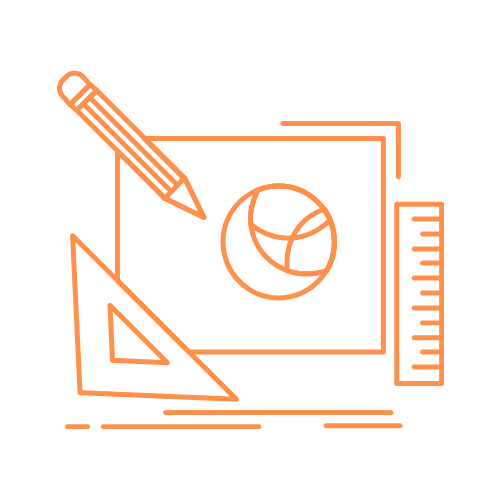
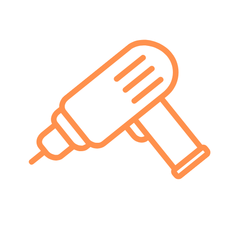
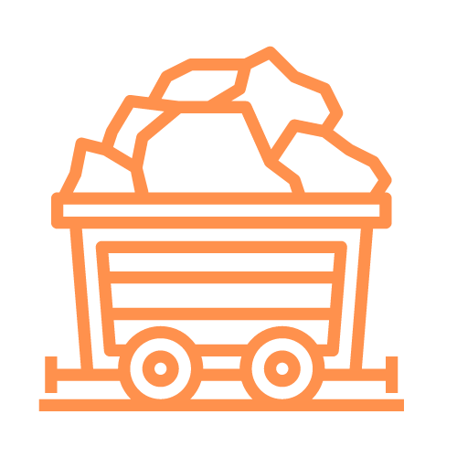

PHASE I: Design It
Teams design the model for an autonomous and/or remote-controlled mining robot.
Each revisiting team must create a new design every year.

PHASE II: Build It
Teams assemble robots using their mechanical design.
The robot must be capable of mining efficiently while
moving about a simulated lunar arena before moving to Phase III.

PHASE III: Dig It
After completing all Phase II requirements, select teams will be invited to the Phase III
on-site challenge at the Kennedy Space Center (Florida).